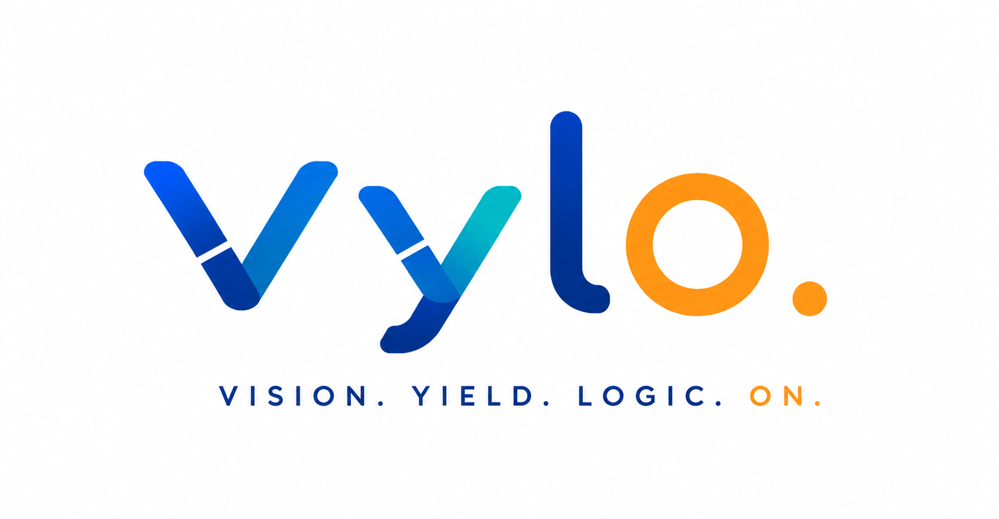

Vision. Yield. Logic. On.
This repository is the official release and distribution hub for Vylo products.
A local-first portfolio management system for individuals, families, and small advisory practices — stocks, funds, real estate, and gold, all in one place, never in a vendor's cloud.
View Vylo PMS →More Vylo products will appear here as they launch.
Official production-ready and preview builds of Vylo products are published through GitHub Releases.
Each release may include:
Individual products may use different architectures and data-handling models. Refer to the relevant product's documentation and release notes for specific privacy, security, and data-storage information.
Product documentation, release information, and support resources will be made available alongside each Vylo product release.
Questions or feedback: vyloproduct@gmail.com
Vylo — Vision. Yield. Logic. On.
Vylo is an AI product company focused on turning complex information, workflows, and decisions into clear, practical, and useful digital experiences.
We develop intelligent products that combine AI with thoughtful product design, privacy-conscious engineering, and human control. Our objective is not to add AI for its own sake, but to apply it where it can meaningfully improve understanding, organization, productivity, and decision-making.
Vylo products are designed around four principles: clarity, usefulness, trust, and control. AI should assist people without obscuring how important decisions are made or removing appropriate human oversight.